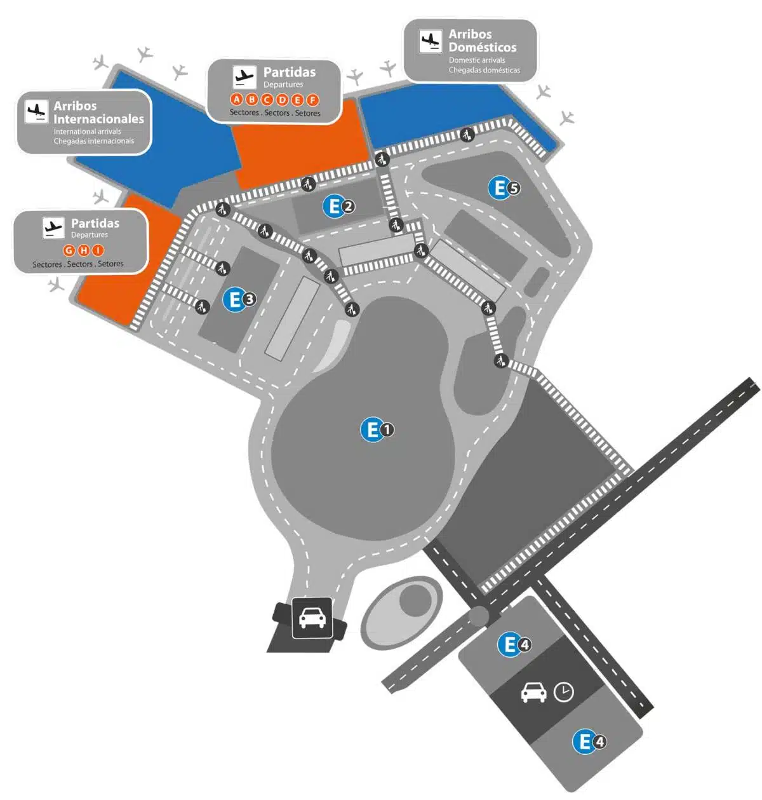

Información General del Aeropuerto
El Aeropuerto Internacional de Ezeiza (EZE), oficialmente conocido como Aeropuerto Internacional Ministro Pistarini, es la principal puerta de entrada internacional de Argentina. Situado a unos 35 km (22 millas) al suroeste de Buenos Aires, es el principal centro de vuelos de larga distancia que conectan Argentina con Norteamérica, Europa y otros continentes. Tanto si llegas como si sales o estás en tránsito, esta guía con el Mapa de la Terminal del Aeropuerto de Ezeiza te facilitará el viaje.
Información rápida
- Zona de bajada situada en la Terminal B.
- Zona de recogida situada en la Terminal A para vuelos internacionales.
- Zona de recogida situada en la Terminal C para vuelos nacionales.
Plano Simplificado del Centro de Transporte
A continuación se muestra un plano simplificado del Aeropuerto Internacional de Ezeiza, incluyendo las áreas de arribos internacionales, arribos domésticos, sectores de partidas, estacionamientos y accesos principales utilizados por los pasajeros.
Este mapa permite identificar rápidamente la ubicación de las distintas terminales y facilita la orientación dentro del aeropuerto.

Mapa de la Terminal del Aeropuerto de Ezeiza
Terminal A
Es la terminal de llegadas internacionales situada en la planta baja. También hay varias tiendas accesibles al público en general.
El primer nivel alberga las puertas de embarque, mientras que la mayoría de las salas están situadas en el segundo nivel.
Terminal B - Terminal de Salidas
Toda la facturación de vuelos nacionales e internacionales se realiza ahora en la nueva Terminal B, rebautizada como "Terminal de Salidas".
En la primera planta encontrarás el control de seguridad y pasaportes para las salidas internacionales, y las puertas de embarque se encuentran próximas a esta zona.
Terminal C
Aquí se encuentra la zona de salidas y llegadas de los vuelos nacionales, así como el control de seguridad y la zona de embarque de los vuelos nacionales.
En el primer nivel también se encuentran otras puertas de embarque internacionales.
Mostradores de Facturación por Compañía Aérea
La facturación tiene lugar en la nueva Terminal B, que es la zona de facturación designada para todos los vuelos, tanto internacionales como nacionales. Si viajas sólo con equipaje de mano, puedes dirigirte directamente a seguridad.
Para los vuelos internacionales, el control de seguridad se encuentra en el Nivel 1 de la Terminal B. Para los vuelos nacionales, el control de seguridad está en la planta baja de la Terminal C, a sólo un minuto a pie del Sector de Facturación A.
- 101 - 115 (Sector A) – Flybondi, JetSMART
- 116 - 145 (Sector B) – GOL, BoA
- 146 - 175 (Sector C) – KLM, Air France, Iberia, SKY
- 176 - 205 (Sector D) – Aerolíneas Argentinas
- 206 - 235 (Sector E) – Lufthansa, LATAM
- 236 - 250 (Sector F) – Air Canada, Copa Airlines
Puertas del Aeropuerto de Ezeiza
En el Aeropuerto Internacional de Ezeiza (EZE), la terminal está estructurada en varios niveles, con una clara distinción entre salidas nacionales e internacionales.
Planta Baja (Nivel 0)
Esta zona está destinada a las salidas nacionales. Los pasajeros que viajen en vuelos nacionales realizarán aquí su facturación y se dirigirán posteriormente a sus respectivas puertas de embarque.
Nivel 1
Este nivel está reservado a las salidas internacionales. Los pasajeros de vuelos internacionales realizarán aquí el proceso de facturación antes de dirigirse a los controles de seguridad e inmigración. Los pasajeros pueden caminar libremente entre todas las terminales. La distancia a pie desde la puerta 1 hasta la puerta 23 es de aproximadamente 10 minutos.
Distribución de puertas
- Puertas 1 a 23: utilizadas para salidas internacionales.
- Puertas 24 a 27: reservadas para salidas nacionales.
Información Útil para Pasajeros
Vuelos Internacionales
Las llegadas internacionales utilizan principalmente la Terminal A para el retiro de equipaje y los procesos migratorios.
Las salidas internacionales realizan el check-in y los controles de seguridad en la Terminal B.
Vuelos Nacionales
Las operaciones nacionales se concentran principalmente en la Terminal C, donde se encuentran las áreas de check-in, seguridad y embarque correspondientes.
Conexión entre Terminales
Las terminales del Aeropuerto Internacional de Ezeiza se encuentran conectadas mediante recorridos peatonales internos que permiten el desplazamiento entre sectores de manera sencilla y rápida.